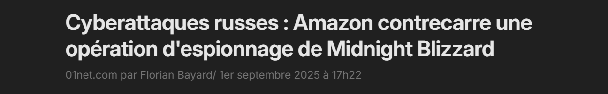
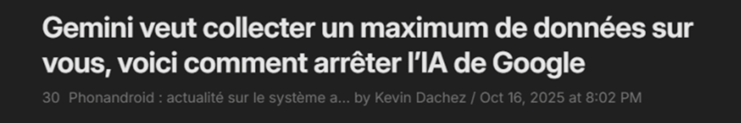
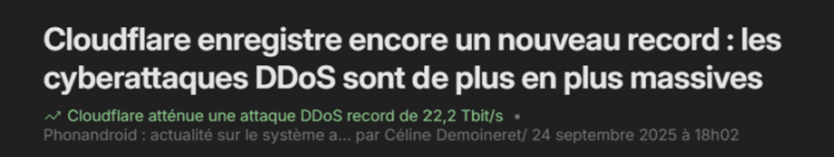

Actualités retenues
Sélection d'articles sur la cybersécurité, les infrastructures cloud et les menaces informatiques.
L'entreprise Anthropic a pris la décision de ne pas rendre public son nouveau modèle, Claude Mythos Preview, en raison de ses capacités jugées trop avancées en cybersécurité offensive. L'IA est en effet capable de découvrir et d'exploiter des vulnérabilités critiques de manière autonome, générant des exploits fonctionnels sans intervention humaine.
Pour encadrer ces risques, l'éditeur a lancé le Project Glasswing, limitant l'accès du modèle à un cercle de partenaires de confiance pour des usages strictement défensifs. Cette décision illustre le risque d'industrialisation des cyberattaques par l'IA et l'urgence pour les organisations de réduire drastiquement leurs délais de déploiement des correctifs de sécurité.

Le groupe de hackers russes Midnight Blizzard, lié aux services de renseignement de Moscou, a mené une vaste campagne de cyberattaques visant les comptes Microsoft. Ils compromettaient des serveurs AWS (Amazon Web Services) pour injecter des scripts malveillants sur des sites web et piéger les internautes avec de fausses pages Cloudflare, afin de voler leurs accès Microsoft en contournant l'authentification à deux facteurs.
Amazon, en collaboration avec Cloudflare, a réussi à neutraliser l'infrastructure utilisée par les pirates en coupant les serveurs compromis et en désactivant les noms de domaine malveillants, empêchant ainsi la poursuite de l'opération.

Une panne importante a affecté les services d'AWS, paralysant des applications comme Canva, Amazon, Prime Video et Fortnite à l'échelle mondiale. L'incident a débuté dans la région de Virginie du Nord, provoquant des erreurs et des latences sur 82 services cloud.
La cause identifiée est un problème technique lié à l'accès aux bases de données, entraînant un effet domino sur l'ensemble des serveurs et des systèmes de calcul d'Amazon. L'événement illustre la dépendance critique aux infrastructures cloud pour le fonctionnement des services numériques mondiaux.

Dans la nuit du 19 au 20 septembre 2025, une attaque par rançongiciel a touché la société américaine Collins Aerospace, fournisseur de plusieurs aéroports européens (Londres, Bruxelles, Berlin, Cork, Dublin). Cette attaque a provoqué une panne du système MUSE (Multi-User System Environment), utilisé pour l'enregistrement et l'embarquement des passagers, entraînant de nombreux retards et annulations de vols.
L'ENISA (Agence de l’Union européenne pour la cybersécurité) a confirmé la nature de l'incident, et une enquête est en cours pour identifier le groupe à l'origine de cette cyberattaque. Cet événement illustre les risques liés à la cybersécurité et la dépendance des organisations aux prestataires externes.
Gemini est désormais présent dans la plupart des services Google (Docs, Drive, Gmail, Traduction, Home, Pixel 10) et collecte de nombreuses données personnelles pour fonctionner. L'IA enregistre notamment les prompts, les fichiers partagés, les interactions audio, les contenus générés, des informations sur vos appareils, ainsi que des données de localisation.
Certaines données peuvent être consultées par des employés Google ou partenaires et sont conservées jusqu'à trois ans. Pour protéger les utilisateurs, il est possible de limiter cette collecte en modifiant les paramètres dans les options « Données et confidentialité » du compte Google.

Une nouvelle vulnérabilité dans les produits VMware, est exploitée depuis octobre 2024 par un groupe de pirates chinois UNC5174. Cette faille permet à un utilisateur local non privilégié d'obtenir les droits root sur une machine virtuelle, via VMware Tools et VMware Aria Operations.
Découverte par Maxime Thiebaut de NVISO, elle provient d'une erreur dans la fonction get_version(),
permettant à un binaire malveillant placé dans /tmp/
d'être interprété comme un binaire système. Broadcom a publié des mises à
jour de sécurité corrigeant la faille.

Le 22 septembre 2025, Cloudflare a annoncé avoir stoppé la plus puissante attaque DDoS (Distributed Denial of Service) jamais enregistrée, culminant à 22,2 térabits par seconde (Tb/s). Cette attaque, qui n'a duré que 40 secondes, était deux fois plus puissante que le précédent record (11,5 Tb/s).
Cloudflare affirme bloquer plus de 190 milliards de menaces par jour, dont plus de 700 attaques dépassant 1 Tb/s depuis le début de l'année. Ces chiffres montrent que les attaques sont plus courtes, mais beaucoup plus violentes et fréquentes, imposant des mesures de défense toujours plus réactives et automatisées.

Un chercheur en cybersécurité a découvert que tout le monde pouvait accéder à une base de données forte de 40 milliards de données personnelles et confidentielles. Elle n'était même pas protégée par un mot de passe. Cet incident illustre les risques liés à la mauvaise configuration des bases de données exposées sur Internet.